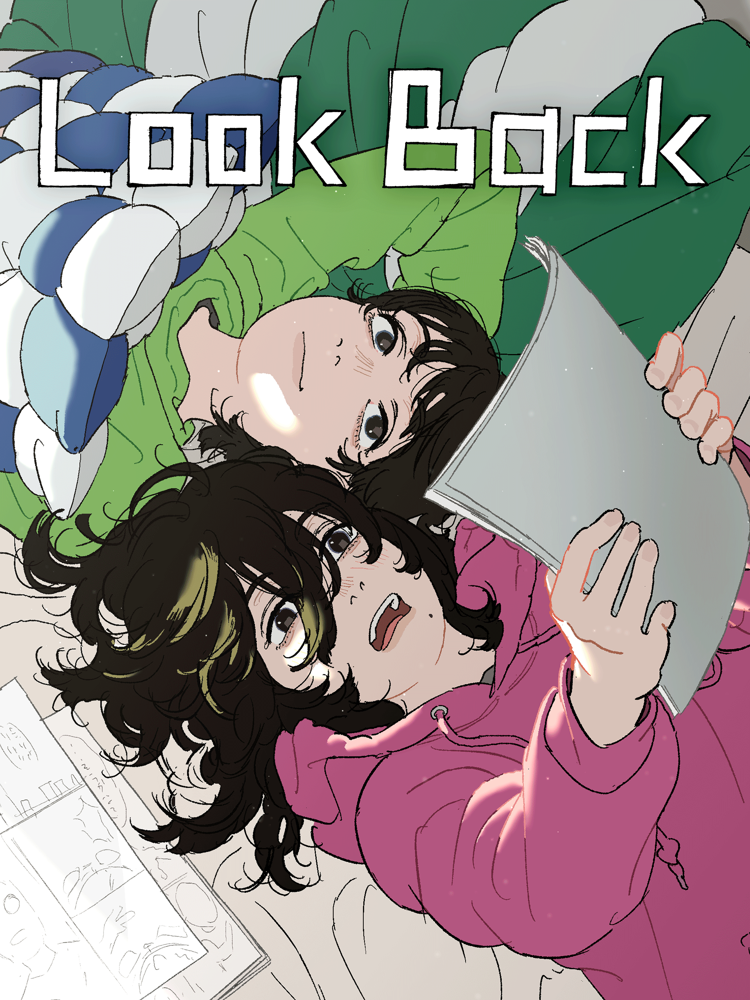
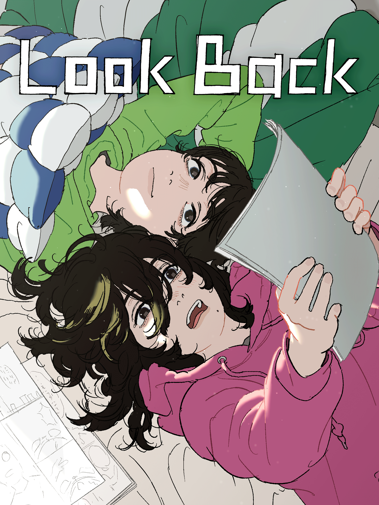

released on June 28, 2024; rated 7.8/10 on IMDb
released from January 9, 2015 - June 30, 2016; rated 7.9/10 on IMDb
released from 13 October 2023 - present ; rated 8.1/10 on IMDb
released in 2004 ; rated 3.4/5 on letterboxd
released from October 4, 1995 - March 27, 1996 ; rated 8.5/10 on IMDb
Anime where 14 year olds have to pilot evas (huge robots) to LITERALLY fight the angels who seek destruction of the world, while dealing with their trauma, insecurities and loneliness. It takes place after the 2nd Impact which took out half the population of earth and they have to avoid the 3rd impact which can DESTROY THE WHOLE WORLD. While it may be hard to grasp, it dwelves really well into the human's psychology, our flaws, identity, life and the meaning of it. The Manga, the anime and the movies take different approaches as if what would happen if the universe was slightly different, which makes everything way more interesting than it already was.
which one do you like the most based off of vibes?
THANK YOU FOR THE ATTENTION!!!>W<